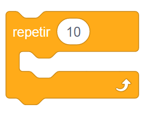

Bienvenido y aprende scratch desde 0

Scratch es un lenguaje visual de programación centrado en fomentar la creatividad y el pensamiento lógico. Aunque cualquier edad es buena para aprenderlo, los niños/as son destinatarios ideales para Scratch. Enseñándoles a usar Scratch estamos ayudándoles a afrontar y resolver situaciones y problemas de todo tipo de una manera lógica y estructurada. Cuando empezamos a enseñar a un niño a programar en Scratch el objetivo principal debería ser que vaya cogiendo soltura y asimilando conceptos, ideas básicas y flujos de trabajo sobre programación y pensamiento computacional de manera divertida y atrayente, para que se genere un interés y base técnica que le anime a seguir.
MOVIMIENTOS
MOVER () PASOS Este bloque mueve tu sprite hacia adelante en la dirección orientada por un número específico de píxeles, con un valor por defecto de 10..

Girar a la derecha () grados Este bloque gira tu sprite en el sentido de las agujas del reloj el número especificado de grados entre -179 y 180.
Girar a la izquierda () grados Este bloque gira tu sprite en el sentido contrario de las agujas del reloj el número especificado de grados entre -179 y 180.
Ir a x: () y: ()Este bloque mueve tu sprite a la posición X e Y especificada instantáneamente, sin animación, para que salte de un lugar a otro.

Ir a …Este bloque establece la posición X e Y de tu sprite a las coordenadas especificadas, que pueden ser las de otro sprite, el puntero del ratón o coordenadas aleatorias.

Deslizar en () segs a … Este bloque mueve tu sprite hacia otro sprite o el puntero del ratón en un tiempo específico, ajustable en segundos.

Deslizar en () segs a x:() y:()Este bloque mueve tu sprite a las coordenadas X e Y en un tiempo específico, pausando el script mientras se desliza.

Apuntar en dirección ()Este bloque rota el sprite según los 360 grados de un círculo. Por defecto, apunta a 90 grados (derecha). -90 es izquierda, 0 es arriba y 180 es abajo. Usa -180 a 180 grados en lugar de 0 a 360.

Apuntar hacia … Este bloque apunta tu sprite hacia el puntero del ratón.

Sumar a x () Este bloque cambia la posición X del sprite que lo utiliza por el número especificado. El eje X oscila entre -240 y 240, pero los sprites pueden moverse más.
Sumar a y () Este bloque cambia la posición Y del sprite que lo utiliza por el número especificado. El eje Y oscila entre -180 y 180, pero los sprites pueden moverse más.
Si toca un borde rebotar Este bloque verifica si tu sprite toca el borde de la pantalla y, si es así, lo hace reflejarse en la dirección opuesta utilizando una línea perpendicular para calcular el ángulo de reflexión.

Dar a x el valor () Este bloque verifica si tu sprite está tocando el borde de la pantalla y lo hace reflejarse en la dirección opuesta utilizando una línea perpendicular al borde para calcular el ángulo de reflexión.
Dar a y el valor () Este bloque verifica si tu sprite toca el borde de la pantalla y lo hace reflejarse en la dirección opuesta.
Fijar estilo de rotación a … Este bloque cambia cómo el sprite rota en el proyecto: libremente en cualquier dirección (por defecto), solo a izquierda o derecha con volteo horizontal, o siempre orientado como si estuviera a 90 grados.
APARIENCIA
Decir () durante () segundos Este bloque hace que el sprite muestre texto en un globo durante un tiempo específico, útil para conversaciones o para mostrar información dinámica como puntuaciones.

Decir () Muy similar al bloque anterior sólo que en este caso la burbuja de diálogo estará visible hasta que se active otro bloque.
Pensar () durante () segundos Podemos utilizar este bloque para que el sprite piense algo en un globo de pensamiento durante los segundos que especifiquemos.
Pensar () Muy similar al bloque anterior sólo que en este caso la burbuja de pensamiento estará visible hasta que se active otro bloque.

Cambiar disfraz a … Este bloque cambia el disfraz de tu sprite a uno específico, útil cuando se necesita seleccionar un disfraz particular en lugar del siguiente en la lista. Puede tomar un número o el nombre del disfraz como entrada.

Siguiente disfraz Este bloque cambia el disfraz de tu sprite al siguiente en la lista de disfraces. Si el disfraz actual es el último, el bloque pasará al primero, creando la ilusión de animación al cambiar sucesivamente los disfraces.

Cambiar fondo a … Este bloque cambia el fondo del escenario al especificado. Este es un bloque de uso común; se utiliza siempre que el escenario debe cambiar a un fondo específico.

Siguiente fondo Este bloque cambia el fondo al siguiente en la lista de fondos, pero si el fondo actual es el último en la lista, el bloque se desplazará al primero.

Cambiar tamaño por () Este bloque cambia el tamaño de tu sprite por una cantidad específica. El tamaño predeterminado es 100, con valores menores reduciendo el sprite y valores mayores agrandándolo.

Fijar tamaño al () % Este bloque ajusta el tamaño de tu sprite al porcentaje especificado. El tamaño predeterminado es 100%; valores menores reducen el tamaño del sprite en el escenario, y valores mayores lo aumentan.

Sumar al efecto … () Este bloque especificado cambia el efecto gráfico en tus sprites en la cantidad especificada. Hay siete efectos diferentes para elegir: color, ojo de pez, remolino, pixelado, mosaico, brillo y desvanecer.
Dar al efecto … el valor () Este bloque establece el efecto especificado en tu sprite o el escenario en el valor especificado. Hay siete efectos diferentes para elegir: color, ojo de pez, remolino, pixelado, mosaico, brillo y desvanecer.

Quitar efectos gráficos Este bloque restablece los 7 efectos gráficos (color, ojo de pez, remolino, pixelado, mosaico, brillo y desvanecer) en tu sprite.
Mostrar Si el sprite del bloque está oculto , mostrará el sprite; si el sprite ya se muestra, nada cambiará. Este bloque es uno de los bloques de apariencia más simples y más utilizados.
Esconder Si se muestra el sprite del bloque , ocultará el sprite; si el sprite ya está oculto, no sucede nada. Este bloque es uno de los bloques de apariencia más utilizados. Un objeto oculto no se puede tocar .

Ir a capa … Este bloque mueve un sprite a la capa más trasera o más delantera. La capa más trasera coloca al sprite detrás de otros, mientras que la más delantera lo sitúa encima, sin ser cubierto por otros sprites.

Ir () a capas hacia … Este bloque cambia la posición de tu sprite hacia adelante o hacia atrás un número específico de capas. Moverlo hacia adelante lo coloca delante de otros sprites, mientras que moverlo hacia atrás lo coloca detrás de otros sprites.
SONIDO
Tocar sonido … hasta que termine Este bloque reproduce un sonido y pausa temporalmente el guion hasta que el sonido termine. Es diferente al bloque "Iniciar sonido ()", que reproduce el sonido sin pausar el guion.

Iniciar sonido … Este bloque reproduce un sonido específico sin detener la ejecución del script, útil cuando se necesita reproducir sonidos mientras otras acciones ocurren en el guion.

Detener todos los sonidos Este bloque detiene todos los sonidos que se estén reproduciendo en los sprites y en el escenario.
Sumar al efecto … () Este bloque ajusta el balance izquierda/derecha y la altura (tono) de todos los sonidos del objeto.

Dar al efecto … el valor () Este bloque ajusta el balance izquierda/derecha y el tono de todos los sonidos del sprite por una cantidad específica.

Quitar efecto de sonido Este bloque quita cualquier efecto de sonido que se esté ejecutando a través de los bloques de efectos de sonido.

Cambiar volumen por () Este bloque cambia el volumen de un sprite por la cantidad especificada. Esto solo afecta al sprite (o el escenario ) en el que se encuentra el bloque.
Fijar volumen al () % Este bloque establece el volumen del objeto en la cantidad especificada. Solo afecta al sprite (o el escenario ) en el que se encuentra el bloque.
EVENTOS
Al hacer clic en la bandera verdeEl bloque de bandera verde inicia todos los scripts cuando se presiona, activando el programa por completo.
Al presionar la tecla … Los scripts bajo este bloque se activan al presionar una tecla específica, como letras, números, teclas de dirección o la tecla de espacio. También puede activarse al presionar cualquier tecla con la opción "cualquiera".
Al hacer clic en este objeto Los scripts bajo este bloque se activan al hacer clic en el sprite o en sus clones, excluyendo áreas transparentes a menos que se definan específicamente en el editor de mapas de bits.

Cuando el fondo cambie a … Los scripts que usen este bloque se activarán una vez que el fondo especificado haya cambiado a en el Escenario.
Cuando … > () Este bloque ejecuta un script cuando un valor (como volumen del sonido o cronómetro) es mayor que un valor numérico especificado, reiniciándose solo cuando la condición cambia después de haber dejado de cumplirse.
Al recibir … Este bloque activa los script de debajo cuando recibe un mensaje enviado por un script de llamada. Si el mismo mensaje se envía de nuevo mientras el script está todavía en ejecución, el script se reiniciará sin llegar a los bloques del final.
CONTROL

Esperar () segundos Este bloque pausa tu script durante la cantidad de segundos especificada – la espera también puede ser un número decimal. Se utiliza siempre que un sprite debe esperar a otra acción (por ejemplo en un diálogo).
Esperar hasta que Este bloque pone en pausa su script hasta que la condición booleana especificada sea verdadera.

Crear clon de … Este bloque crea un clon del sprite en el argumento. También puede clonar el sprite en el que se está ejecutando, creando clones de clones, recursivamente.
Al comenzar como clon Este bloque hace que los scripts adjuntos a este bloque sean activados por los clones cuando éstos se crean.
Detener … Este bloque es el único bloque que cambia de forma dependiendo del argumento. Es de terminación para el argumento «todos» y para «este programa» en cambio se transforma en apilable para el argumento «otros programas en el objeto».
Eliminar este clon Este bloque es el único bloque que cambia de forma dependiendo del argumento. Es de terminación para el argumento «todos» y para «este programa» en cambio se transforma en apilable para el argumento «otros programas en el objeto».

Por siempre Este bloque ejecuta un conjunto de bloques en un bucle continuo hasta que se detiene manualmente con "Detener", "Detener todo" o un bloque "Parar script" dentro del bucle. No permite la ejecución de bloques colocados debajo y tiene un pequeño retraso, por lo que se recomienda usar

Repetir () Los bloques que se mantienen dentro de este bloque harán un bucle una cantidad determinada de veces (las que pongas en el espacio), antes de permitir que el script continúe. Este bloque tiene un ligero retardo.
Si … entonces Si la condición es verdadera, ejecuta los bloques; si es falsa, los ignora. Se verifica una sola vez y no se vuelve a revisar hasta que los bloques terminen su ejecución.

Repetir hasta que … Si la condición es verdadera, los bloques dentro se ejecutan; si es falsa, se ignoran. La condición se verifica una vez y no se vuelve a revisar mientras los bloques están en ejecución.

Si … entonces si no Este bloque comprueba la condición booleana; si la condición es verdadera, se activará el código mantenido dentro de la primera C (en el espacio para los scripts); si la condición es falsa, se activará el código dentro de la segunda C.
ACTIVIDAD 1
HACER UNA ANIMACION DE UN ZOOLOGICO DONDE CAMBIE A 3 ESCENARIOS DIFERENTES Y DETALLE CADA ANIMAL POR ESCENARIOPONERLE SONIDO A CADA ANIMAL POR ESCENARIO Y QUE CUMPLA CON CADA ANIMACION
nota
1. se evaluara la creatividad de cada estudiante
2. si agrega mas sprites y funciones a los escenarios
3. se verificara el codigo y la condicion que cumpla su funcion y que este en perfecto estado y cumpla con los requisitos establecidos
4. se tendra encuenta el tiempo establecido para cumplir la actividad
5. se preguntara a un estudiane una funcionalidad y para que sirve